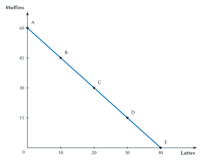
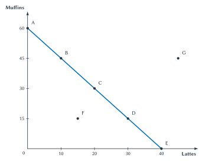
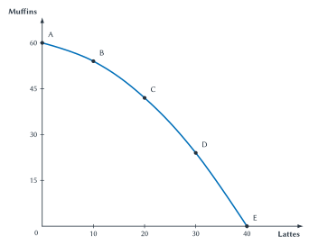
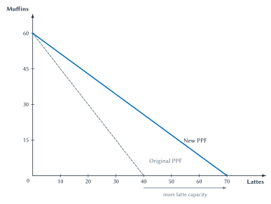
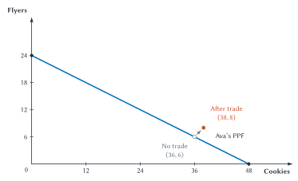
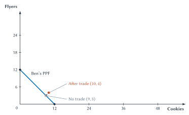
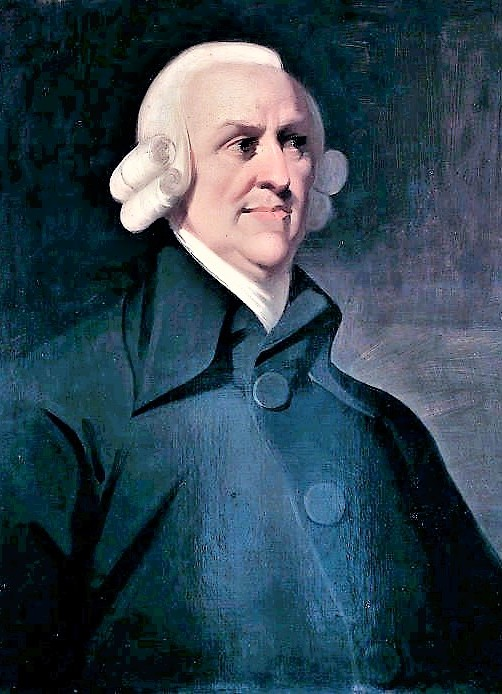

Chapter 2
Opportunity Cost, Trade, and Coordination
Differences in opportunity cost create gains from specialization and trade, while money, prices, and institutions help separate plans fit together.

You walk into a campus coffee shop and order a latte and a muffin. The exchange takes less than a minute. Yet no one in the shop grew the coffee beans, raised the cow that supplied the milk, produced the flour, built the espresso machine, wrote the payment software, and transported everything to campus.
Each person performed only a small part of the work. That specialization made the latte and muffin possible at a cost most students could afford. It also created dependence. The grower needed a transporter. The coffee shop needed reliable deliveries. Workers needed to be paid. Customers needed some reason to expect that the food was safe and the payment would work.
This chapter explains both sides of that story. People can produce more when they specialize in activities where their opportunity costs are low and trade for the rest. But specialization means that separate plans must somehow fit together. Money, prices, contracts, property rights, reputation, and market rules help make that cooperation possible.
Chapter 1 examined the opportunity cost of an individual choice. We now apply the same idea to production and trade. The central question is no longer only “What should I choose?” It is also “What should each person produce, and how can those separate choices benefit everyone involved?”
Production Possibilities And Trade-Offs
Before studying trade, we need a clear picture of what one producer can make. Consider a coffee shop that produces lattes and muffins during a morning shift. It has a fixed number of workers, ovens, espresso machines, ingredients, and hours.
If the shop uses all its available resources to make muffins, it can produce 60 muffins and no lattes. If it uses everything for lattes, it can produce 40 lattes and no muffins. It can also divide its resources between the two goods.
The production possibilities frontier, usually shortened to PPF, shows the greatest combinations of two goods that can be produced with the resources and technology currently available. A frontier is a boundary. Figure 2.1 is the shop’s production boundary.
Figure 2.1. The coffee shop’s production possibilities frontier. Every point from A through E uses the shop’s current resources fully. Moving right produces more lattes but requires giving up muffins.
At point A, the shop produces only muffins. At point E, it produces only lattes. Point C represents 20 lattes and 30 muffins. The PPF does not tell the shop which point is best. It shows which combinations are available. The best point depends on how much customers value lattes and muffins.
Moving from B to C adds 10 lattes but reduces muffin production from 45 to 30. The opportunity cost of those 10 lattes is 15 muffins. The opportunity cost of one latte is therefore 1.5 muffins. Moving along this straight PPF always involves the same trade-off.
The calculation also works in reverse. Moving from C back to B adds 15 muffins and gives up 10 lattes, so one muffin costs two-thirds of a latte. Opportunity costs must name both the good gained and the good given up. Saying only that “the cost is 15” is incomplete.
The slope of the line summarizes this trade-off, but students do not need a slope formula to read the graph. Choose two points, identify what increased, and divide what was given up by what was gained. The words should come before the arithmetic: muffins given up per additional latte.
Quick Concept
A PPF Shows A Production Boundary
A production possibilities frontier shows the greatest combinations of two goods that can be produced with current resources and technology. Moving along it reveals the opportunity cost of producing more of one good.
The first figure shows the boundary. The next question is what points on either side of that boundary mean.
Points On, Inside, And Outside The PPF
Figure 2.2 adds two points. Point F lies inside the PPF. The shop can produce that combination, but it is not using its workers, equipment, or ingredients as fully as it could. Perhaps an oven is broken, workers are waiting for orders, or poor scheduling leaves equipment unused.
Point G lies outside the PPF. The shop cannot produce that many lattes and muffins with its current resources and technology. Calling G unattainable does not mean it is impossible forever. More workers, better equipment, improved skills, or new technology could make it possible later.

Figure 2.2. What different points mean. Points on the PPF use current resources fully. Point F is available but inefficient. Point G is currently beyond the shop’s production capacity.
Economists call a point on the PPF productively efficient because producing more of one good would require producing less of the other. A point inside is inefficient because some resources are unused or poorly used. A point outside is currently unattainable.
These labels answer a production question, not a moral one. An efficient point is not automatically fair, healthy, or desirable. It simply means that the producer is not wasting available productive capacity.
An inside point also calls for an explanation. During a power outage, the shop may be unable to use equipment that still exists. During a slow afternoon, the owner may deliberately leave some capacity unused because few customers are present. The graph identifies unused productive ability; it does not tell us why that ability is unused or whether producing unwanted goods would improve anyone’s well-being.
Why Opportunity Cost Often Rises
The straight PPF is useful for introducing the idea, but resources are rarely equally good at every task. A worker who is excellent at preparing espresso may be less skilled at baking. An oven designed for muffins cannot make lattes. As the shop shifts more resources toward lattes, it first moves workers and equipment that adapt easily. Later, it must pull resources away from muffin production that are especially valuable there.
Figure 2.3 shows the result. The first 10 additional lattes cost only 6 muffins. The next 10 cost 12 muffins, then 18, and finally 24. The opportunity cost of another latte rises as latte production expands.

Figure 2.3. Increasing opportunity cost. As the shop produces more lattes, it must move workers and equipment that are increasingly well suited to muffin production. Each additional group of lattes therefore costs more muffins.
Increasing opportunity cost explains why most PPFs are drawn bowed outward rather than as straight lines. It also carries a broader lesson: the cost of an action depends on which resources must be moved and what those resources could have done instead.
Technology Can Change The Boundary
A PPF describes current possibilities, not a permanent limit. Suppose the shop installs faster espresso equipment and improves its ordering system. Latte production rises, while the maximum number of muffins remains about the same.

Figure 2.4. Better latte technology expands production possibilities. The new PPF reaches farther along the latte axis while keeping the muffin intercept unchanged. The shop can now produce more lattes and, at many combinations, more of both goods.
The frontier could also move inward. A fire, loss of workers, damaged equipment, or disrupted supply could reduce what the shop can produce. In either direction, the PPF helps separate a change in available production capacity from a movement between choices on the existing frontier.
That distinction matters. Moving from muffins toward lattes on one PPF changes the shop’s chosen mix but not its productive ability. An outward movement of the PPF means the shop’s ability has grown. Economic growth is shown by an expanding boundary, not simply by choosing a different point on the old one.
We now know how to describe one producer’s choices. Trade becomes important when different people face different production trade-offs.
Being Better Is Not The Same As Giving Up Less
Imagine, hypothetically, that Patrick Mahomes can mow his lawn faster than a professional landscaper. He may be better at mowing in the simple sense that he can finish in less time. It still may not make sense for him to mow.
An hour Mahomes spends mowing could replace practice, recovery, family time, or paid work that he values highly. The landscaper may take longer but give up far less. The important question is not only “Who can complete the task faster?” It is “Who gives up less to complete it?”
This distinction leads to two important terms.
- A person has an absolute advantage when that person can produce more with the same resources or produce the same amount with fewer resources.
- A person has a comparative advantage when that person can produce a good at a lower opportunity cost.
Someone can have the absolute advantage in every activity without having the comparative advantage in every activity. Comparative advantage depends on sacrifice, not simply speed or skill.
Even someone who is less productive at both tasks can still have a comparative advantage. Being worse at everything does not mean having nothing valuable to trade.
This is why “do what you are best at” is not quite the economic rule. A person may be best at several tasks. The useful rule is to place more effort where the opportunity cost is lowest and obtain other goods through exchange when trade is available.
Key Point
Opportunity Cost Drives Specialization
The case for specialization depends on what each producer gives up, not simply on who produces the most. Lower opportunity cost identifies comparative advantage.
Common Mistake
Absolute Advantage Is Not Comparative Advantage
Producing more establishes absolute advantage. Comparative advantage depends on what must be given up. Always calculate both opportunity costs before deciding who should specialize.
The lawn example provides the intuition. Ava and Ben will give us the full calculation.
Ava And Ben Discover Gains From Trade
Ava and Ben are independently preparing for different campus-club fundraisers. Each needs cookies and flyers, and each has eight hours available. They do not begin as teammates, and no manager assigns their work. Each initially plans to produce both goods alone.
They happen to meet and compare how long the tasks take. That information reveals a possible trade.
| Student | Minutes For One Cookie | Minutes For One Flyer |
|---|---|---|
| Ava | 10 | 20 |
| Ben | 40 | 40 |
Table 2.1. Time needed for each task. Ava is faster at both tasks, but speed alone does not determine comparative advantage.
The time numbers can be converted into maximum eight-hour output. Eight hours equals 480 minutes.
| Student | Cookies In Eight Hours | Flyers In Eight Hours |
|---|---|---|
| Ava | 48 | 24 |
| Ben | 12 | 12 |
Table 2.2. Maximum output in a common work period. Ava can produce more cookies and more flyers, so she has the absolute advantage in both.
Comparative advantage requires one more step: find what each person gives up. Ava can make either 48 cookies or 24 flyers. One cookie therefore costs her one-half of a flyer. One flyer costs her two cookies. Ben can make either 12 cookies or 12 flyers, so either good costs him one unit of the other.
When calculating, keep the requested good in the question. For the opportunity cost of one cookie, divide maximum flyer output by maximum cookie output. For the opportunity cost of one flyer, reverse the ratio. Reversing the words requires reversing the arithmetic.
| Student | Opportunity Cost Of One Cookie | Opportunity Cost Of One Flyer |
|---|---|---|
| Ava | 1/2 flyer | 2 cookies |
| Ben | 1 flyer | 1 cookie |
Table 2.3. Opportunity costs. Ava gives up fewer flyers when she makes a cookie. Ben gives up fewer cookies when he makes a flyer.
| Good | Absolute Advantage | Comparative Advantage |
|---|---|---|
| Cookies | Ava | Ava |
| Flyers | Ava | Ben |
Table 2.4. The two kinds of advantage. Ava has the absolute advantage in both goods, but comparative advantage is divided because opportunity costs differ.
Ava should focus more on cookies because she gives up only one-half flyer for each cookie. Ben should focus more on flyers because he gives up only one cookie for each flyer. This does not say that Ben is the better flyer maker. Ava is faster. It says that flyers are less costly for Ben compared with his other production option.
Quick Concept
Comparative Advantage
A person or group has comparative advantage in the activity it can perform at the lowest opportunity cost.
Specialization Expands Total Output
Before meeting, suppose each student plans to spend six hours on cookies and two hours on flyers. Ava produces 36 cookies and 6 flyers. Ben produces 9 cookies and 3 flyers. Together they produce 45 cookies and 9 flyers.
After comparing opportunity costs, Ava spends all eight hours on cookies and produces 48. Ben spends all eight hours on flyers and produces 12. Specialization raises their combined output by 3 cookies and 3 flyers.
More output creates the possibility of a gain, but specialization alone does not give both students both goods. They also need to trade.
Suppose Ava gives Ben 10 cookies in exchange for 8 flyers. The terms of trade are the rate at which the goods are exchanged: one cookie trades for 0.8 flyer.
That rate lies between their opportunity costs. Ava gives up one cookie to receive 0.8 flyer, which is better than the 0.5 flyer she could obtain by shifting her own time away from cookies. Ben gives up 0.8 flyer for one cookie, which is better than the full flyer it would cost him to bake the cookie himself.
The acceptable range is therefore more than 0.5 flyer but less than 1 flyer for each cookie. At Ava’s own cost of 0.5, Ava receives no gain from trading rather than producing flyers herself. At Ben’s cost of 1, Ben receives no gain. Outside that range, at least one student would reject the offer. A trading rate inside the range creates room for both to gain.
Comparative advantage creates room for a gain. The terms of trade determine how that gain is divided.
| Student | Before Trade | Production After Specializing | Trade | Consumption After Trade | Gain Compared With Before |
|---|---|---|---|---|---|
| Ava | 36 cookies, 6 flyers | 48 cookies, 0 flyers | Gives 10 cookies; receives 8 flyers | 38 cookies, 8 flyers | 2 more cookies, 2 more flyers |
| Ben | 9 cookies, 3 flyers | 0 cookies, 12 flyers | Receives 10 cookies; gives 8 flyers | 10 cookies, 4 flyers | 1 more cookie, 1 more flyer |
Table 2.5. Specialization, trade, and gains. Both students consume more of both goods than under their original independent plans.
The gains do not have to be equal for trade to be mutually beneficial. Ava gains more in this example, but Ben still freely accepts because the trade leaves him better off than producing alone. A different exchange rate between their two opportunity costs would divide the gains differently.
Start with Ava. In Figure 2.5, the open point at (36 cookies, 6 flyers) shows what she produced and consumed without trade. It lies on her PPF. After specializing in cookies and trading with Ben, she consumes 38 cookies and 8 flyers. The filled point lies outside her PPF because some of the flyers she consumes were produced by Ben.

Figure 2.5. Ava gains from trade. Ava moves from (36 cookies, 6 flyers) to (38, 8). Her after-trade consumption lies beyond what she could produce alone.
Now consider Ben separately. In Figure 2.6, his open no-trade point at (9 cookies, 3 flyers) lies on his PPF. After specializing in flyers and trading with Ava, he consumes 10 cookies and 4 flyers. His gain is smaller than Ava’s in this example, but the filled point still lies outside what he could produce by himself.

Figure 2.6. Ben gains from trade. Ben moves from (9 cookies, 3 flyers) to (10, 4). His after-trade consumption also lies beyond what he could produce alone.
Taken together, Figures 2.5 and 2.6 show that trade did not change either student’s production ability. Their PPFs stayed in the same place. The after-trade points lie outside those frontiers because each person can consume goods produced by the other. Specialization expanded total output, and exchange allowed both to share the gain.
This is the difference between production and consumption. Ava produces only cookies after specializing but consumes cookies and flyers after trading. Ben produces only flyers but also consumes both. A person cannot produce beyond an individual PPF, but trade can make consumption beyond that PPF possible.
Full specialization makes the arithmetic easy to see, but it is not required in every real setting. Transportation costs, risk, changing demand, the need for several skills, and the difficulty of finding trading partners can lead people to specialize only partly. The basic logic remains: shifting production toward lower-opportunity-cost uses can create gains.
Key Point
Trade Can Create More, Not Merely Move Goods Around
Specialization based on comparative advantage can increase total output. Trade then allows each side to obtain goods on better terms than by producing everything alone.
Study And Learn
Practice Comparative Advantage
Use the Comparative Advantage Practice applet to calculate opportunity costs, identify comparative advantage, test terms of trade, and check gains. Always complete both opportunity-cost calculations before choosing who should specialize.
A Country-Level Transfer Check
Comparative advantage is not limited to students or workers. Suppose one worker-year in the United States can produce either 120 tons of wheat or 60 tons of steel. One worker-year in Brazil can produce either 80 tons of wheat or 20 tons of steel. These numbers are hypothetical.
| Country | Wheat Per Worker-Year | Steel Per Worker-Year |
|---|---|---|
| United States | 120 tons | 60 tons |
| Brazil | 80 tons | 20 tons |
Table 2.6. A transfer check. The United States has the absolute advantage in both goods. Opportunity costs are still needed to identify comparative advantage.
For one ton of wheat, the United States gives up one-half ton of steel, while Brazil gives up one-quarter ton. Brazil therefore has the comparative advantage in wheat. For one ton of steel, the United States gives up two tons of wheat, while Brazil gives up four. The United States has the comparative advantage in steel.
The country names changed, but the reasoning did not. Being able to produce more of both goods does not remove the possible gains from specialization and trade.
This example shows that both countries can gain in total. It does not show that every worker or industry gains. Chapter 9 returns to those losses.
David Ricardo used an example involving England, Portugal, cloth, and wine to show this logic in 1817.1 Modern textbooks usually explain his insight with opportunity cost, language developed later. The enduring point is that differences in sacrifice can create gains from trade even when one side is more productive in every activity.
Division Of Labor And The Size Of The Market
Comparative advantage explains which activities people tend to emphasize. The division of labor goes one step further by dividing production into narrower tasks. A restaurant separates cooking, serving, purchasing, cleaning, and management. A hospital uses nurses, pharmacists, surgeons, technicians, billing specialists, and many other roles.
Task specialization can raise output for several reasons. Workers gain practice. They avoid repeatedly switching tools and locations. They can develop equipment and methods designed for one task. Teams can also match people with work that fits their skills.
Specialization can occur within a firm or across firms. A restaurant divides tasks among cooks, servers, and managers. The restaurant itself may buy bread from a bakery, bookkeeping from an accountant, and delivery services from another company. The economic question is the same at both levels: which arrangement uses people’s time and abilities at the lowest opportunity cost?
Adam Smith used a pin factory to make this point in The Wealth of Nations. One worker trying to make a pin from beginning to end would accomplish little. When production was divided into separate steps, workers became far more productive.2 The exact historical output numbers are not the lesson. The lesson is that organizing work into specialized tasks can greatly increase production.
Smith added an equally important qualification: specialization is limited by the size of the market. A highly specialized producer needs enough customers to support the narrow activity.
A larger market does not merely reward specialists. It makes many specialized jobs possible in the first place.
An isolated household must perform many tasks for itself. A small town can support broad occupations, such as a general physician or a general repair shop. A large city or region can support specialists who draw customers from many communities. Online markets extend this logic even further. A niche seller may find too few local buyers but enough customers across the country or the world.
Smith also connected specialization to a simple fact about exchange. We do not usually get dinner because a butcher, brewer, or baker wants to give it to us. They earn income by offering something customers value, while customers trade because they value the meal more than the money they pay. Each side pursues its own gain, but each can succeed only by giving the other side a reason to trade.
Smith later used the image of an invisible hand to describe how people pursuing their own plans can sometimes help produce a larger result they did not intend. The phrase does not mean that selfish behavior is always good or that markets never fail. It points to the question at the center of this book: how can separate choices fit together without one person directing all of them?3
Historical Note
Economist Profile: Adam Smith

Adam Smith, the Muir portrait, circa 1800.4
Adam Smith (1723-1790) placed specialization and exchange near the beginning of The Wealth of Nations. He explained how the division of labor could increase productivity, why the size of the market limits specialization, and how exchange can connect people pursuing their own goals. Those ideas link personal gains from trade to a larger question: how can the work of many specialists fit together when no one person directs all of it?
Specialization creates more output, but it also creates interdependence: people become more dependent on the work of others. Self-sufficiency avoids that dependence, but at a high cost: it gives up most of the gains from specialization. Prosperity and vulnerability grow from the same interdependence.
Look at the things around you. You could not make your laptop from raw materials. More surprisingly, you probably could not make even a wooden pencil entirely by yourself. The medical specialist needs patients, suppliers, trained staff, payment systems, and other physicians. The niche seller needs search tools, shipping, payment, and trust. Greater productivity and greater dependence arrive together. The next question is how those connections are made.
Barter, Money, And The Cost Of Trading
Imagine a baker who wants shoes. Under barter, the baker must find a shoemaker who wants bread at the same time and agrees on how much bread the shoes are worth. If the shoemaker wants plumbing work instead, the trade fails even though the baker’s bread and the shoemaker’s shoes are both valuable.
Economists call this problem a double coincidence of wants: each person must happen to want what the other offers. The phrase is technical, but the problem is simple. Direct exchange requires a very particular match.
Money breaks that match apart. The baker can sell bread to one person today, receive money, and use that money to buy shoes from someone else tomorrow. Selling no longer has to occur with the same person, at the same moment, as buying.
Money does not create more flour, leather, labor, or time. It makes trade easier. Easier trade allows people to specialize more deeply because they do not have to produce everything they consume or locate a perfect barter partner.
Sideline
Why Money Supports Specialization
Money allows a person to sell to one party and buy from another, possibly at a later time. By separating selling from buying, money makes exchange easier and allows people to depend more heavily on specialized work.
The progression is easier to see as a series of problems and partial solutions. Self-sufficiency avoids the need to trade, but it gives up the benefits of specialization. Barter permits direct trade, but it requires the right two wants to match. Money solves much of that matching problem by separating selling from buying. Organized markets then help buyers and sellers find one another and understand the rules of exchange. Online marketplaces can widen the search and add ratings, payment tools, and shipping rules. Each arrangement solves part of the problem left by the one before it, but none makes trade costless or risk-free.
The time and effort required to complete a trade are called transaction costs. They include finding a trading partner, learning about quality, negotiating, arranging payment and delivery, and dealing with broken promises. When these costs are too high, a trade that would benefit both sides may never happen.
Transaction costs can be paid with money, but many are paid with time, effort, delay, and risk. A search that takes three hours is costly even when no fee is charged. Fear that a stranger will not deliver is also a cost because it can prevent the trade entirely. Lowering these costs creates value by allowing more of the possible gains from trade to be realized.
This point changes how we should think about markets. A market is not merely a physical place where people buy and sell. It is a set of arrangements that helps potential buyers and sellers find one another, compare offers, exchange payment, and carry out agreements.
Institutions Can Make Difficult Trades Possible
Suppose a student has a used laptop worth at least $350 to the student. Another student would gladly pay as much as $500. A possible gain from trade exists: any price between $350 and $500 could make both better off.
The seller prefers the money to keeping the laptop, while the buyer prefers the laptop to keeping the money paid. That is the basic logic of voluntary exchange: a trade occurs because both sides expect to benefit. Their gains need not be equal, and either side could later discover a mistake. The important starting point is that both choose the exchange over the alternatives they believe they face.
Yet the trade may not occur. The buyer may never find the seller. The buyer may fear that the battery is failing or that the laptop is stolen. The seller may fear a false payment. They may live far apart, disagree about shipping risk, or have no practical way to resolve a dispute.
An organized marketplace can make the laptop trade easier at several points. Search tools help the two students find one another. Product details, seller history, and ratings help the buyer judge quality and reliability. Verified payment protects both sides from some kinds of fraud. Shipping, return, and dispute rules make responsibilities clearer if something goes wrong. These services do not eliminate every risk, but they may reduce the obstacles enough for the trade to occur.
These services are not decorations around the market. They help create the market by lowering transaction costs. An entrepreneur who builds a better payment, reputation, or matching system can create value without producing the laptop itself.
The same reasoning applies far beyond online platforms. A warranty makes a seller’s promise more believable. A familiar brand puts future sales at risk if quality is poor. A credit-card network verifies payment. Courts provide a possible remedy for broken contracts. Each arrangement addresses a different reason why willing buyers and sellers might otherwise fail to complete a trade.
The marketplace may also charge fees, make mistakes, or write rules that favor one side. The lesson is not that every platform is good. It is that potential gains from trade do not complete themselves. Rules and organizations affect which beneficial trades actually occur.
Key Point
Potential Gains Do Not Guarantee Trade
Buyer and seller can both expect to benefit and still fail to trade when finding one another, judging quality, making payment, arranging delivery, or enforcing promises is too costly.
How Separate Plans Fit Together
Return to the latte and muffin from the chapter opening. The coffee grower knows local soil, weather, and production costs. The transporter knows available routes and capacity. The coffee shop knows its inventory and what customers are ordering. The customer knows whether the drink is worth its price.
These plans can conflict. The shop may want more beans than growers planned to supply. A transporter may lack space when a shipment is needed. Customers may switch to tea while the shop is stocking coffee. Coordination means bringing those changing plans into workable agreement.
Prices enter the story here because they are one of the main ways these separate plans connect. Chapters 3 and 4 explain where market prices come from and why they change. For now, the important point is what prices do: they give buyers and sellers a reason to adjust their choices when conditions change.
No participant knows everything, and no single person needs to send complete production instructions to all the others. A higher price for scarce beans gives growers and coffee shops a reason to adjust even if they do not know every cause of the shortage. Growers may try to produce more, while shops may use beans more carefully or seek other suppliers. The price does not explain everything or guarantee a perfect response. It carries enough information to influence many separate choices.
Prices are not working alone. Money allows sales and purchases to occur across different people and times. Contracts state promises. Reputation gives people a reason to keep those promises. Firms use managers to direct some tasks internally. Goods and services move from growers through transporters and shops toward customers, while payments move back through the chain. These connections arise without one person writing a complete production plan for everyone.
Leonard Read made this interdependence vivid through an ordinary pencil. No single person knows how to grow and harvest every input, mine and process every material, make the machinery, transport the parts, and assemble the final product. The pencil emerges from the specialized work of people who may never meet.5 A laptop makes the point too easily because everyone knows it is complicated. A pencil is useful because it looks simple. Even this ordinary object depends on a web of cooperation that no one participant fully understands.
Historical Note
The Pencil Coordination Puzzle
An ordinary pencil combines materials, knowledge, machines, transportation, and labor from many places. The contributors do not need to know one another or understand the whole process. Prices, trade, firms, contracts, and other institutions help their limited pieces of knowledge fit together.
Economists call this decentralized coordination: many people make separate choices using the information available to them, yet those choices can still fit together. “Decentralized” does not mean “without rules.” Property rights identify who may sell a resource. Contracts and courts support promises. Money, reputation, and firms reduce different costs of cooperation.
Nor does it mean that every activity is handled through an open market. Firms coordinate many tasks through managers and employment agreements. Families, nonprofits, professional codes, and governments organize other activities. Markets are one important way of coordinating specialized work, not the only way people cooperate.
The result is never perfect. Prices can be slow to adjust. Information can be wrong. Contracts can be incomplete. Trust can fail. Later chapters study those problems. The starting point is that specialization creates both greater production and a need for coordination, and institutions help meet that need.
The Big Picture
Opportunity cost connects the entire chapter. A PPF shows what must be given up when one producer shifts resources. Comparative advantage compares those sacrifices across people. Specialization moves production toward lower-opportunity-cost uses, and trade allows the participants to share the added output.
But specialization makes people more dependent on one another. Money separates selling from buying. Markets help trading partners find one another. Prices guide choices. Contracts, reputation, property rights, firms, and dispute rules make promises more believable and trade easier to complete.
The broad lesson is not simply that trade is good. It is that gains from trade depend on both economic differences and the institutions that allow people to discover and act on them. The rest of the book will examine how well those coordinating arrangements work, when they fail, and what alternatives are available.
Chapter Study Map
Core Ideas
- PPF: the boundary showing the greatest combinations of two goods available with current resources and technology.
- Opportunity cost: moving along a PPF requires giving up some of one good to produce more of another.
- Absolute advantage: producing more with the same resources.
- Comparative advantage: producing at a lower opportunity cost.
- Specialization and trade: shifting production toward comparative advantage can increase total output and allow both sides to consume more.
- Extent of the market: larger reachable markets can support narrower specialization.
- Money and transaction costs: money separates selling from buying, while lower trading costs allow more exchanges to occur.
- Coordination and institutions: prices, contracts, reputation, property rights, firms, and rules help separate plans fit together.
Diagrams
- Figure 2.1: Use the PPF to calculate what must be given up when latte production increases.
- Figure 2.2: Explain the difference between points on, inside, and outside the PPF.
- Figure 2.3: Connect the bowed shape to workers and equipment that are better suited to different tasks.
- Figure 2.4: Explain why latte technology changes the latte intercept but not the muffin intercept.
- Figure 2.5: Explain why Ava’s after-trade consumption can lie outside her PPF without moving it.
- Figure 2.6: Apply the same reasoning separately to Ben’s after-trade consumption.
Reasoning Tasks
- Calculate the opportunity cost of each good for both producers.
- Distinguish absolute advantage from comparative advantage.
- Check whether a proposed trading rate lies between both opportunity costs.
- Compare each person’s consumption before and after trade.
- Explain why a larger market can support a more specialized occupation.
- Identify which obstacle to trade is reduced by money, reputation, verified payment, or dispute resolution.
Common Mistakes
- Treating the PPF as a forecast rather than a boundary of current possibilities.
- Assuming every point inside the PPF is desirable because it is available.
- Choosing specialization according to absolute advantage.
- Reversing the opportunity-cost calculation.
- Assuming any trading rate benefits both sides.
- Claiming gains from trade without comparing each side before and after.
- Assuming specialization makes people independent.
- Assuming money creates resources rather than making exchange easier.
Practice And Enrichment
- Use the comparative-advantage applet for repeated calculation and trade practice.
- The Adam Smith profile connects specialization to the size of the market.
- The used-laptop case shows why possible gains from trade may require supporting institutions.
- The pencil note extends the coordination question to a modern supply chain.
Review Questions
- What does a production possibilities frontier show?
- What is the difference between a point on, inside, and outside a PPF?
- Why does moving along a PPF involve opportunity cost?
- Why is a PPF often bowed outward rather than straight?
- How does improved latte technology change the coffee shop’s PPF?
- Distinguish absolute advantage from comparative advantage.
- Why might someone who is faster at every task still choose to hire another person for one of them?
- Calculate Ava’s and Ben’s opportunity costs of one cookie and one flyer.
- Why does Ava have the comparative advantage in cookies while Ben has it in flyers?
- What must be true of a trading rate for both sides to gain?
- Why can after-trade consumption lie outside a person’s PPF even though trade does not move the PPF?
- What did Adam Smith mean when he said the division of labor is limited by the size of the market?
- What problem makes barter difficult, and how does money reduce it?
- What is a transaction cost? Give three examples.
- How can reputation or dispute resolution make a possible trade more likely to occur?
- Why does decentralized coordination still require rules and institutions?
Economic Reasoning Questions
- A food truck can produce either 80 tacos or 40 burritos during lunch. What is the opportunity cost of one burrito? Of one taco?
- A point inside a factory’s PPF appears after several machines break. Is the point inefficient, or did the PPF itself move? Explain what additional information you need.
- A surgeon can type reports faster than an assistant. Explain why the assistant may still have the comparative advantage in typing.
- Two students propose trading one cookie for two flyers in the Ava-Ben example. Determine whether both would accept and explain why.
- A small town gains high-speed internet access. Explain how the larger reachable market might change the kinds of jobs or businesses its residents can support.
- A marketplace removes seller ratings but lowers its fees. Identify the two opposing effects on the cost of completing trade.
- Explain how money allows a musician to perform for one customer and later buy food from someone who never attended the performance.
- Choose an ordinary product and identify four specialized contributors. Then explain what information each contributor needs and what institution helps connect the work.
Source Notes
David Ricardo, On the Principles of Political Economy and Taxation (1817), Chapter VII, “On Foreign Trade.” Ricardo’s England-Portugal cloth-and-wine example is a historical foundation for comparative advantage. This chapter uses the modern opportunity-cost formulation rather than attributing that exact terminology to Ricardo.↩︎
Adam Smith, An Inquiry into the Nature and Causes of the Wealth of Nations (1776), Book I, Chapters I-III, and Book IV, Chapter II, Project Gutenberg edition. The chapter paraphrases Smith’s division-of-labor, exchange, extent-of-the-market, and invisible-hand arguments without treating his illustrative pin-factory output as a modern empirical estimate.↩︎
Adam Smith, An Inquiry into the Nature and Causes of the Wealth of Nations (1776), Book I, Chapters I-III, and Book IV, Chapter II, Project Gutenberg edition. The chapter paraphrases Smith’s division-of-labor, exchange, extent-of-the-market, and invisible-hand arguments without treating his illustrative pin-factory output as a modern empirical estimate.↩︎
Adam Smith, the Muir portrait (cropped), unknown artist, circa 1800, Scottish National Gallery, accession PG 1472. Wikimedia Commons source. Public-domain faithful reproduction.↩︎
Leonard E. Read, “I, Pencil: My Family Tree as Told to Leonard E. Read” (1958), Econlib edition. The chapter uses a brief paraphrase rather than reproducing the essay’s extended catalog of inputs.↩︎
.jpg){kind=link}